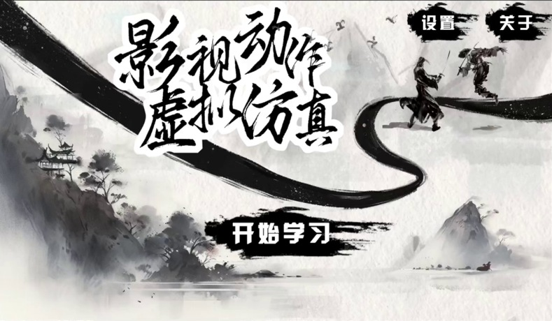
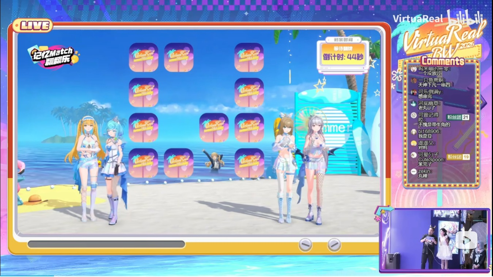
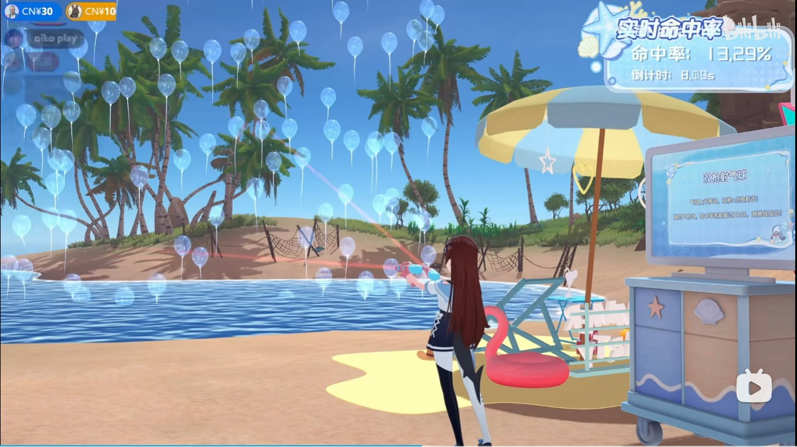
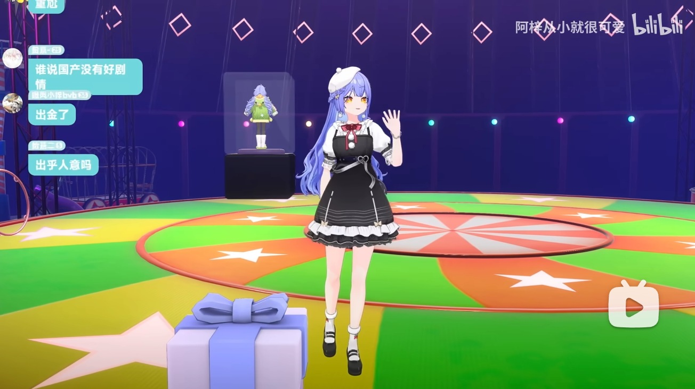
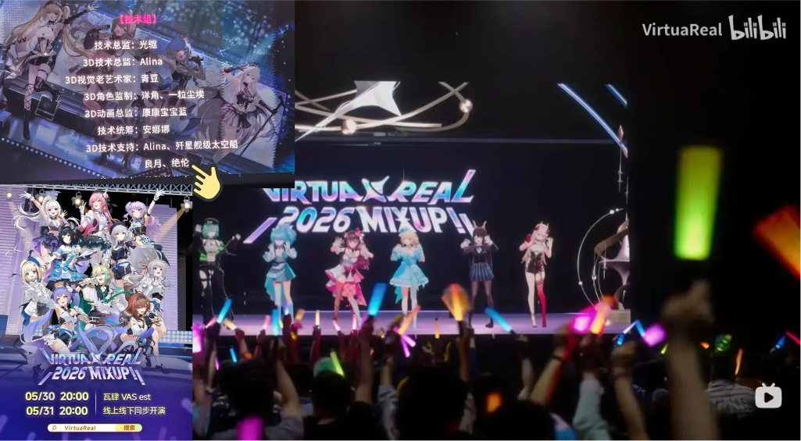
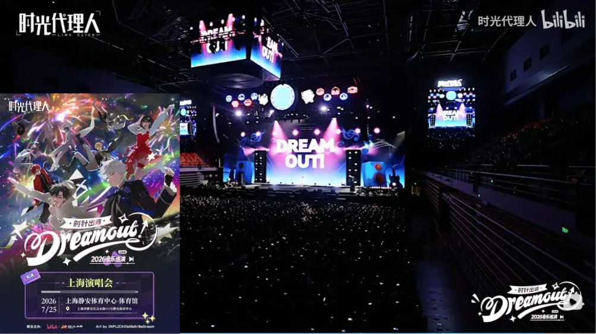
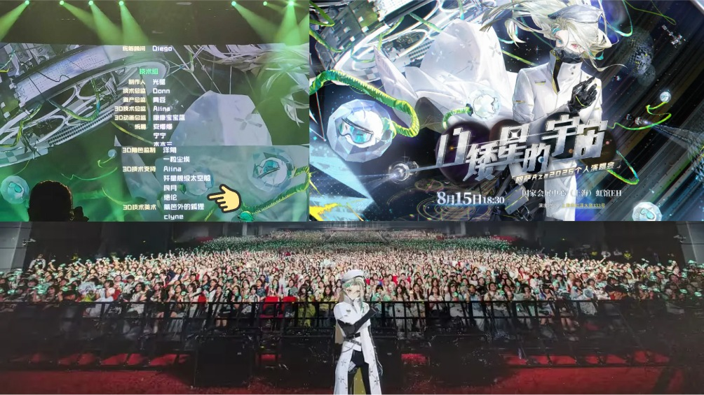
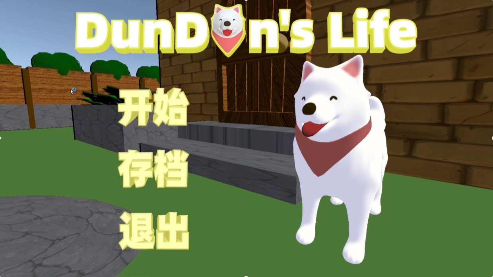

骑士绝伦
二维像素风 ARPG
基于数据驱动与事件机制组织战斗、任务、对话、背包及角色成长系统，实现跨系统存档与进度恢复。
Unity / C# / 游戏系统
解压后运行 JuelunGame.exe。
GAME CLIENT DEVELOPER · SHANGHAI
求职意向：游戏客户端开发。
上海大学硕士在读，使用 Unity / C# 开发游戏玩法、交互逻辑与工具，具备系统整合及实时互动项目落地经验。
01 / SELECTED PROJECTS
游戏玩法与系统开发 / 实习工程实践
基于数据驱动与事件机制组织战斗、任务、对话、背包及角色成长系统，实现跨系统存档与进度恢复。
解压后运行 JuelunGame.exe。
接入 B 站直播弹幕与 DeepSeek Chat API，解析文本、情绪及动作指令，通过 WebSocket 流式 TTS、Animator 与 CrossFade 完成语音和角色表现联动。
筹备中的独立项目。

获取人体关键点并传输至 Unity，完成角色动作驱动、姿态匹配与评分，将摄像头输入转化为体感游戏交互。
运行游戏需配备摄像头。演示视频可直接观看。

基于 extOSC 实现双端通信，通过配对状态机、互斥控制与异步流程管理完成回合制互动，并提供运行时调试支持。
作品集标注演示片段：04:00–22:25。

接收双通道射击指令，结合对象池与 RaycastAll 实现高频目标生成和命中检测，通过调试面板支持现场参数调整。
作品集标注演示片段：1:01:22–1:04:05。

基于 Timeline 编排直播节目，整合 Animator、ParticleSystem、DOTween 与 NiloToon，实现角色表现、舞台效果及动态角色绑定。
作品集标注演示片段：09:00–22:00。

使用 Unity Timeline 和 Cinemachine 编排角色动画、音频及镜头，参与动捕数据落地与演出现场的状态切换和 Cue 点执行。
链接为 2 分 34 秒宣传视频。

参与节目制作与多轨演出内容编排，结合角色动作、舞台效果和镜头时序完成制作预览及流程调整。
链接为上海演唱会现场回顾。

参与节目制作与现场 3D 程序执行，围绕舞台状态、角色、灯光与特效进行流程配置和现场联动。

负责项目策划、动画与交互模块开发，结合输入控制、动画事件和 Timeline 镜头编排实现角色行为及叙事交互。
解压后运行 DunDun's Life.exe。
02 / THE FULL PORTFOLIO
浏览原始 16 页作品集，点击任一页面放大查看。
03 / DOWNLOADS
保留原始文件，方便进一步了解
LET’S BUILD SOMETHING